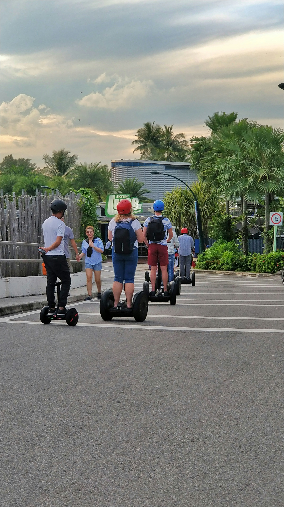
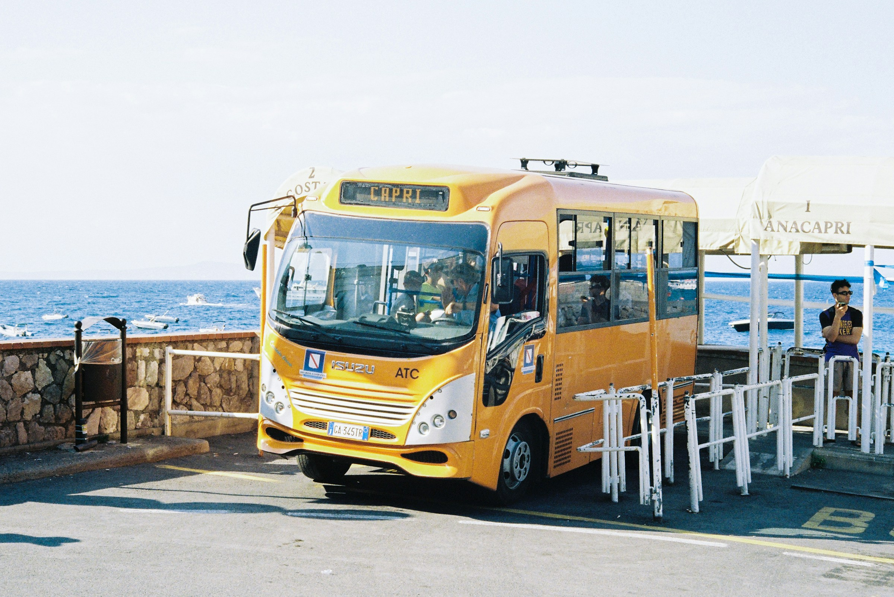
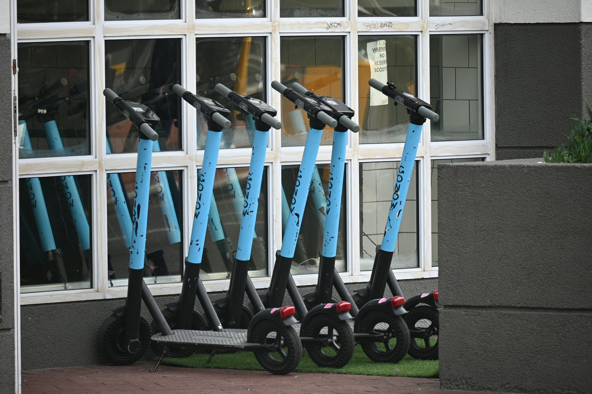
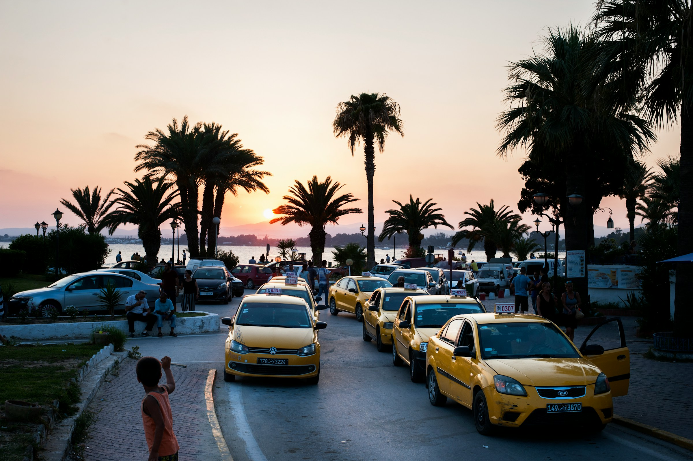
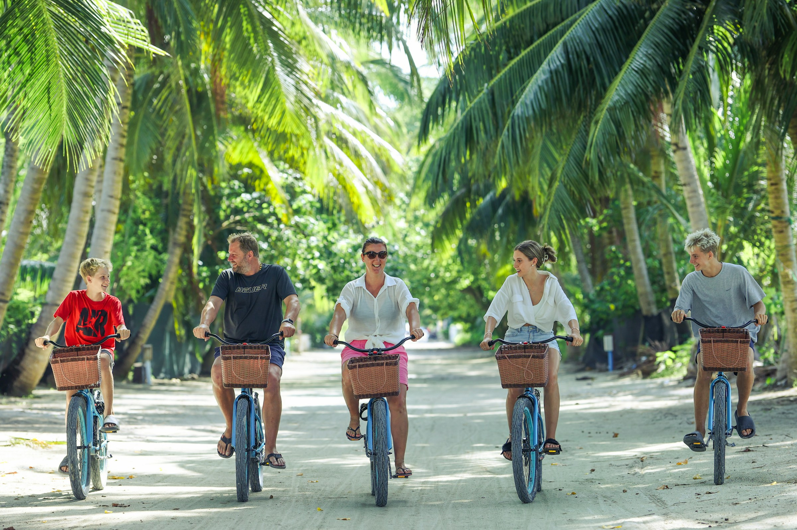

Whether you're exploring Taniti's bustling markets, tranquil beaches, or mountain trails, getting around is simple and flexible.
From taxis to bicycles, we make it easy to see the island your way.

Photo by ajitsandhu on Unsplash (2025)
Ways to Travel

Photo by k4i_w3i on Unsplash (2025)
Public Buses
Affordable and reliable, buses connect all major areas of Taniti. Perfect for sightseeing or local commuting.

Photo by tanyapaquet on Unsplash (2025)
Scooter Rentals
Rent a scooter and explore the island at your own pace. Helmets are provided, and parking is easy across Taniti.

Photo by naseem_buras on Unsplash (2025)
Taxis & Rideshares
Quick, convenient, and available almost anywhere. Many drivers offer local tips and scenic routes.

Photo by jumanjiphotos on Unsplash (2025)
Bicycle Tours
Discover hidden gems and quiet paths with guided or solo bike routes across the island.
Travel Tips
Traffic drives on the right side of the road.
Most areas are pedestrian-friendly — bring comfortable shoes!
Public transportation runs daily from 6 AM to 10 PM.
Taxi and scooter rentals accept both cash and cards.